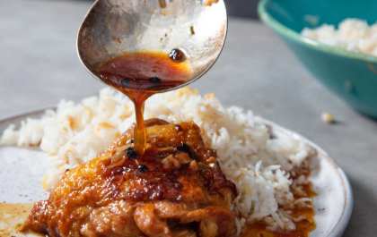

Chicken Adobo
Description
A delicious Filipino dish made with chicken cooked in a savory sauce of vinegar, soy sauce, garlic, and spices.

Ingredients
- 2 pounds chicken thighs, bone-in and skin-on
- 1/2 cup soy sauce
- 1/2 cup vinegar
- 1/4 cup water
- 6 cloves garlic, minced
- 2 bay leaves
- 1 teaspoon black peppercorns
- 1 tablespoon brown sugar (optional)
- Salt and pepper to taste
Instructions
- In a large bowl, combine soy sauce, vinegar, water, garlic, bay leaves, and black peppercorns. Mix well.
- Add the chicken thighs to the marinade and let it sit for at least 30 minutes (or overnight in the refrigerator for best results).
- Heat a large skillet or pot over medium heat. Remove the chicken from the marinade (reserve the marinade) and brown the chicken on both sides.
- Pour the reserved marinade into the skillet with the chicken. Bring to a boil, then reduce heat to low and simmer for 30-40 minutes, or until the chicken is cooked through and tender.
- If desired, add brown sugar to the sauce and stir until dissolved. Adjust seasoning with salt and pepper to taste.
- Serve hot with steamed rice.